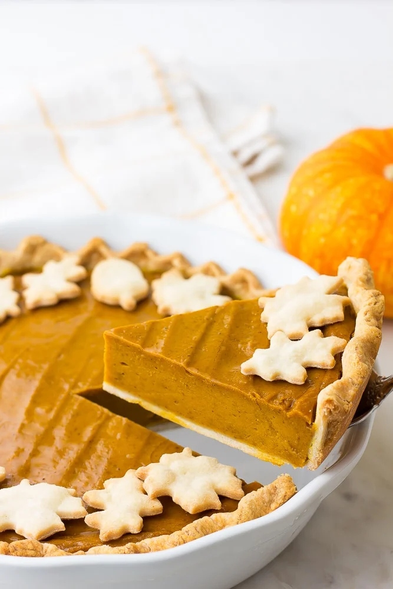

Vegan Pumpkin Pie

Description
The only recipe for Vegan Pumpkin Pie you'll ever need, and it's perfect for the holidays! SO easy to make with only 9 ingredients. No one will guess it's vegan!
Ingredients
- 1 (15 ounce) can pumpkin puree
- 1 cup coconut cream
- 1 cup brown sugar
- 1 teaspoon cinnamon
- 1 teaspoon ginger
- 1/2 teaspoon nutmeg
- 1/8 teaspoon cloves
- 1/2 teaspoon salt
- 3 tablespoons cornstarch
- 1 recipe Easy Vegan Pie Crust
- Vegan Whipped Cream optional, for serving
Instructions
- Preheat the oven to 350 degrees F. Prepare a pie crust in a pie plate.
- Add the canned pumpkin, coconut cream, brown sugar, cinnamon, ginger, nutmeg, cloves, salt and cornstarch to a blender and blend until very smooth. You may also simply whisk it together in a bowl until smooth.
- Pour the mixture into a 9-inch pan lined with a pie crust. May use a vegan store bought vegan pie crust, my Easy Vegan Pie Crust, or this Gluten Free Pie Crust. I don't pre-cook the pie crust. Spread the mixture evenly with a spatula.
- Bake for 1 hour. If the crust starts to burn, cover the edges of the crust with aluminum foil or a pie shield after about 30 minutes of baking. The middle will still look jiggly; that's normal. Let cool at room temperature for 30 minutes, then cover and transfer to the refrigerator to chill for at least 4 hours or overnight.
- Slice and serve with Vegan Whipped Cream or store bought non-dairy whipped topping, if desired. Enjoy!
- For the Pie Crust Leaves: These are totally optional for decoration. Make or buy an extra pie crust, and roll out the dough about 1/8th inch thick. Using leaf cookie cutters, cut into shapes. Place on a baking sheet and bake for 10 minutes at 350 degrees F.